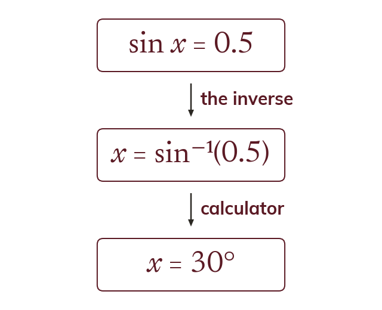

The inverse undoes the ratio
To find an angle from a ratio, use the inverse: sin⁻¹, cos⁻¹ or tan⁻¹. If sin x = 0.5, then x = sin⁻¹(0.5) = 30°.
When a ratio is known, the angle is found with the inverse function, written sin⁻¹, cos⁻¹ or tan⁻¹. If sin x = 0.5, then x = sin⁻¹(0.5) = 30°.